つかえるシリーズ
教科をまたいで同じ形でつくっている、活用問題のシリーズです。1単元＝4まい＋解答。1まい目で全員の足場をつくってから、学力テストで出るような読み取り・思考・記述に登っていきます。式・図・文章はすべて自作、© School Stock。
63 単元を表示中
つかえる算数 3年
全1単元 あまりの意味からはじめて、場面によって答え方が変わるところまで登ります。
つかえる算数 4年
全13単元 啓林館の年間指導計画に沿った配当順です。4月から3月までの一年ぶんがそろっています。
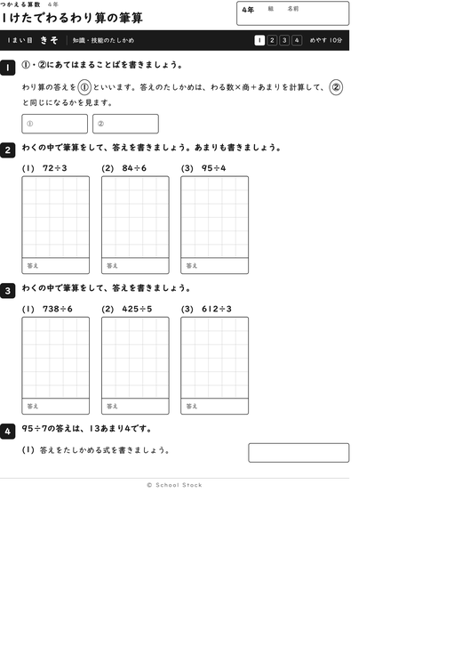


つかえる算数 5年
全8単元 一学期の6単元と、2学期の倍数・約数、三角形と四角形の面積です。
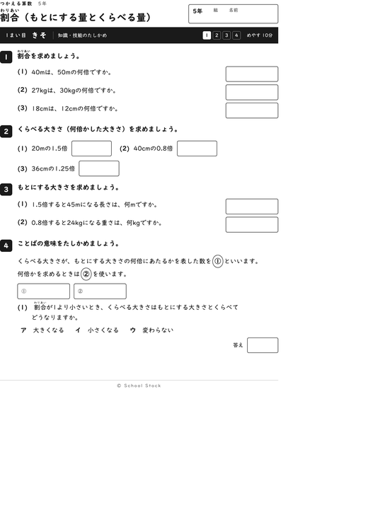

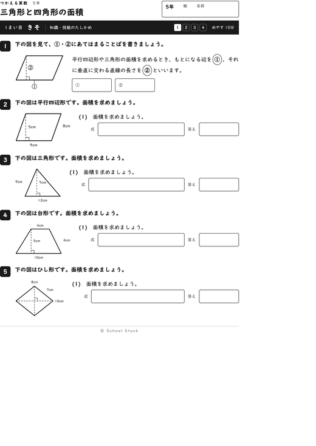
つかえる算数 6年
全1単元 分数でわる意味を、数直線と図でたどります。
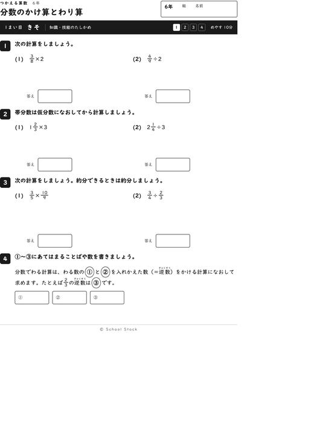
つかえる国語 1年
全1単元 じゅんじょをあらわすことばを手がかりに、文しょうの順を読みます。1・2年は分かち書き・全ルビ・なぞりの足場つきです。
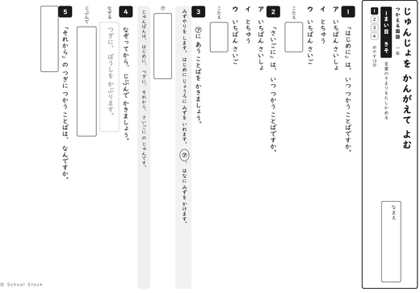
つかえる国語 2年
全1単元 二つの文しょうを、同じところとちがうところで見くらべます。
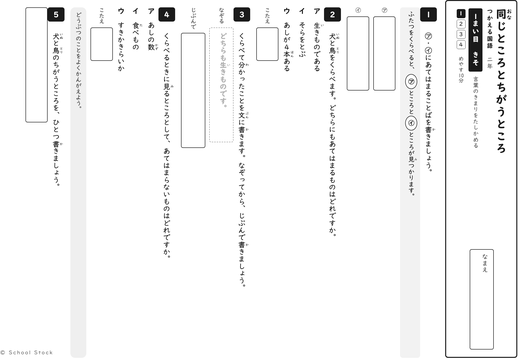
つかえる国語 3年
全1単元 引用のしかたと出典の示し方です。本のページと調べたメモを行き来しながら読みます。
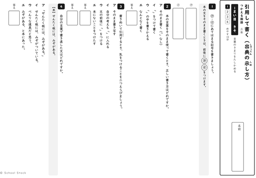
つかえる国語 4年
全2単元 考えと、それを支える理由や事例のつながりを読みます。中心となる語や文を見つけて要約するところまで。
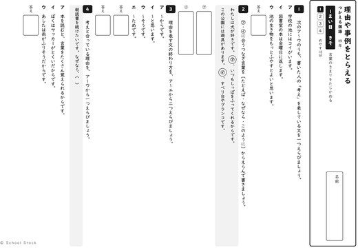
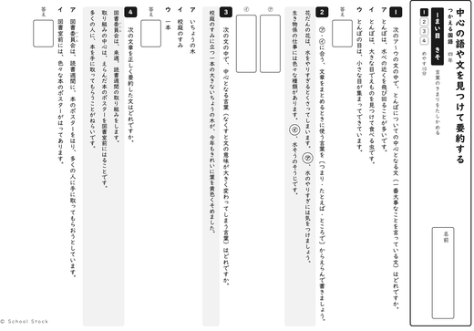
つかえる国語 5年
全1単元 事実と意見を、文末の言葉から読み分けます。
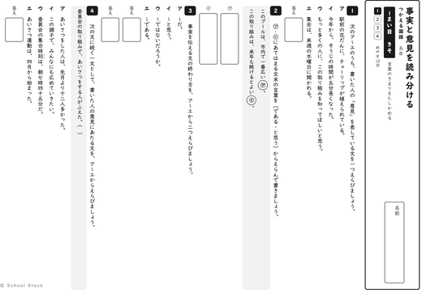
つかえる国語 6年
全1単元 提案文を、事実（データ）と考えのつながりから読んで書きます。
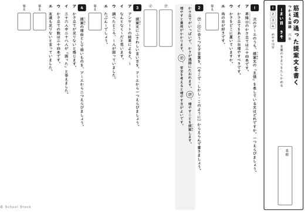
つかえる理科 3年
全1単元 理科の学習が始まる学年です。条件をそろえて調べることを、風とゴムの実験からつかみます。
つかえる理科 4年
全6単元 観察や実験の場面から「調べる問題」を見出して、予想→結果→考察へ登ります。資料の数字には出典と年次を入れています。
つかえる理科 5年
全2単元 流れる水のはたらきと物のとけ方です。5年の「条件をそろえて調べる」を、実験の記録から組み立てます。
つかえる社会 4年
全4単元 地域の実データ（出典と年次を紙面に印字）で読み取り・記述まで登ります。先生向けの資料編A4×1枚つき（子どもに配る紙ではありません）。
つかえる社会 5年
全4単元 実際の統計（出典と年次を紙面に印字）で読み取り・記述まで登ります。先生向けの資料編A4×1枚つき（子どもに配る紙ではありません）。
つかえる数学 中3
全8単元 中3の1年ぶんがそろいました（学習時期の順）。全国学力・学習状況調査（中3）の問い方の型と正答率の穴をもとに、記述には「見本」と結論文の形を添えています。あいているところは、途中の計算に使えます。
つかえる数学 中2
全5単元 2学期からの5単元です（学習時期の順）。証明は「方針を選ぶ」ところから、確率と箱ひげ図は数え方と読み方の型を置いています。
つかえる数学 中1
全3単元 比例と反比例、平面図形、空間図形の3単元です（学習時期の順）。作図と展開図は、手を動かす前の見通しに重さを置いています。